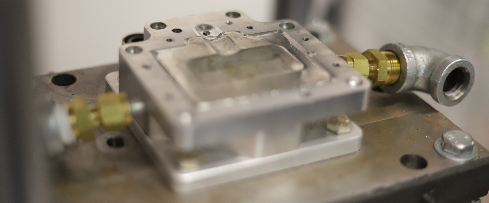
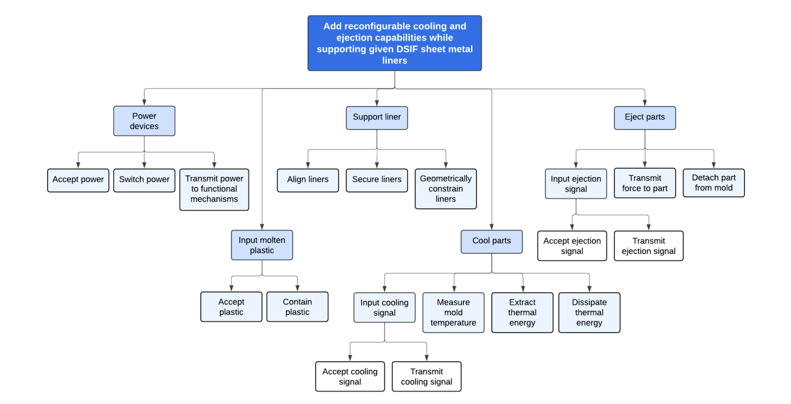
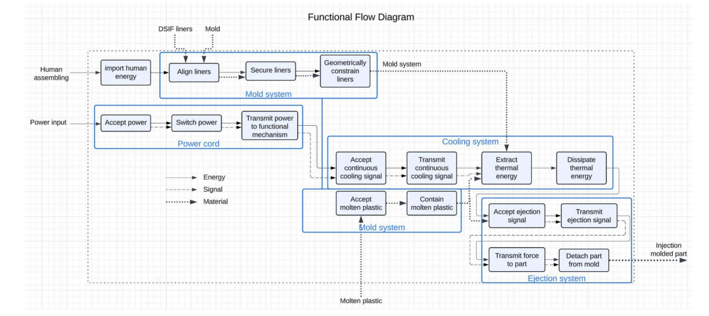
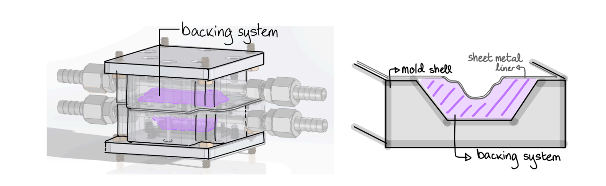
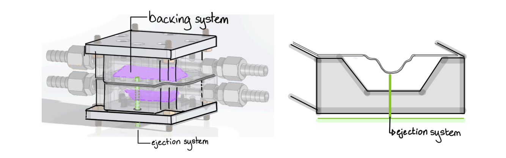
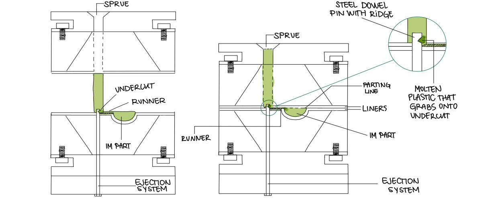
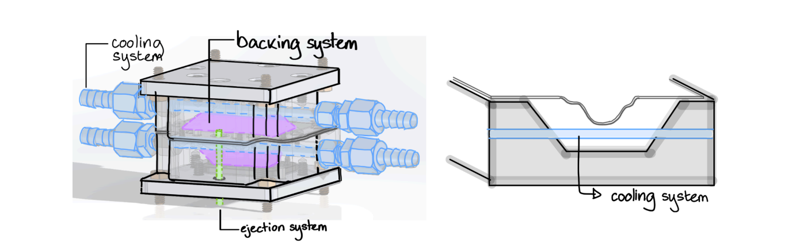

| No. | Needs | Importance (1–5) |
|---|---|---|
| 1 | The mold system produces components that match geometric and dimensional tolerances of the liner. | 5 |
| 2 | The mold system cools the part effectively. | 3 |
| 3 | The mold system allows an ejector pin system. | 5 |
| 4 | The mold system allows for and supports various liner geometries. | 5 |
| 5 | The mold system remains functional at molding temperatures. | 5 |
| 6 | The mold system is compatible with Morgan Press Desktop Plastic Injection Molding Machine, and can be accurately secured onto the platens. | 4 |
| 7 | The mold system has a high expected lifetime. | 2 |
| 8 | The mold system is safe to maneuver/reconfigure. | 5 |
| 9 | The mold system is easy and quick to maneuver/reconfigure. | 5 |
| 10 | The mold system has lower materials and fabrication cost per geometry than a regular injection molding die. | 3 |
| 12 | The mold system is affordable. | 4 |
| 13 | The mold system produces parts quickly. | 3 |
| No. | Metric | Units | Marginal Value | Ideal Value | Importance (1–5) | Needs Satisfied |
|---|---|---|---|---|---|---|
| 1 | % deviation of part dimensions from nominal | % | 5% | 2.5% | 5 | 1, 4, 5 |
| 2 | % cycles producing parts within tolerance | % cycles | 95% | 99.7% | 2 | 7 |
| 3 | Cooling efficiency | % cycle time | 95 | <70 | 3 | 2 |
| 4 | % cycles with successfully ejected parts within part tolerance | % cycles | 90 | >99 | 5 | 3 |
| 5 | Cycle time | sec | 120 | <30 | 5 | 3, 9, 12 |
| 6 | Alignment error in mounted molding system halves | mm | ±0.25 mm | ±0.1 mm | 4 | 6 |
| 7 | Backing supports liner for # of cycles | cycles | 10,000 | 100,000 | 2 | 7 |
| 8 | Minimum edge radius of mold | mm | >0.13 | >0.25 | 5 | 8 |
| 9 | Mass of disposed material per cycle | g | 450 | 0 | 3 | 10 |
| 10 | Mold system (backing, cooling, ejection systems, liners) initial manufacturing cost | $ | $1000 | $100 | 4 | 11 |
| 11 | Mold system (backing, cooling, ejection systems, liners) operational cost | $ per cycle | $5 | $0.50 | 4 | 11 |





